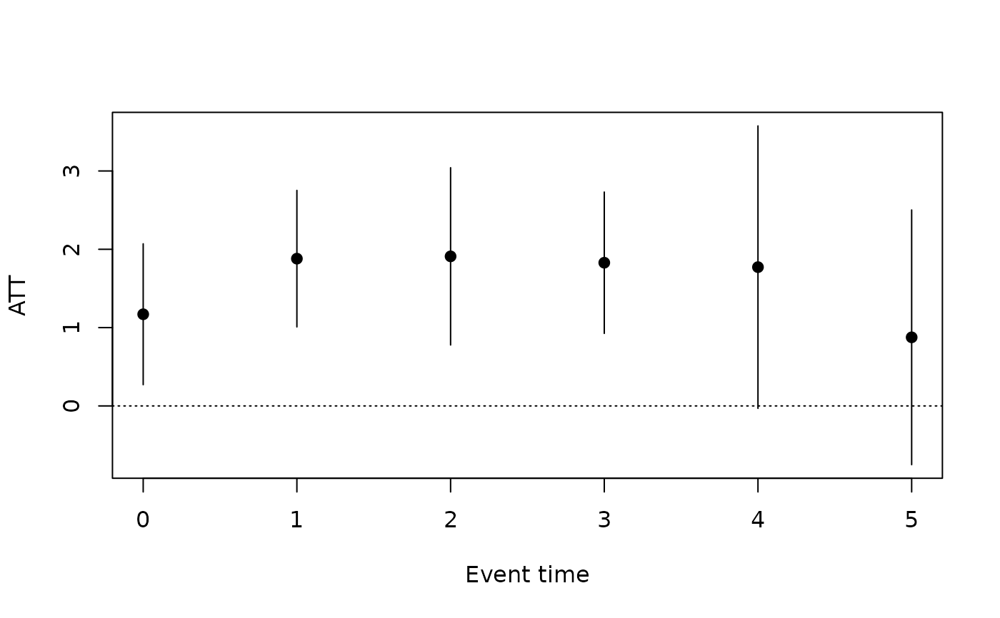

The extended two-way fixed-effects (ETWFE) estimator of Wooldridge
(2021, 2023) for staggered adoption, with linear, Poisson or logit
outcome models. The model interacts the treatment with every cohort by
period cell, so that each cohort can have its own effect in each period:
with g the first treated period of the cohort and t the period,
$$E[y_{it}] = F(\alpha + \gamma_g + \lambda_t + \sum_{(g, t)}
\tau_{gt} D_{gt,it} + x_{it}'\beta + \ldots)$$
where D_gt indicates cohort g in period t, gamma_g and
lambda_t are cohort and period effects and F is the identity, the
exponential or the logistic function. Because the cell effects are
unrestricted, the estimator does not suffer from the negative weights
of the single-coefficient TWFE regression of did(); in the linear case
with control = "notyet" it is numerically equivalent to an imputation
estimator. For nonlinear models, parallel trends is imposed on the index
(for example on the log of the mean for Poisson), which suits counts and
binary outcomes.
Arguments
- formula
outcome ~ 1, oroutcome ~ controls- data
a data.frame in long format
- index
c(individual, time); the time index must be numeric. The individual identifies the clusters for the standard errors.- treat
name of the column holding each individual's first treated period;
NA,0orInffor units that are never treated- family
"gaussian"(linear),"poisson"(counts, log link) or"binomial"(binary, logit link;"logit"is accepted)- control
"notyet"or"never"; see Specification- vcov
"cluster"(by individual, the default) or"classical". The cluster covariance uses the factorG / (G - 1) * (n - 1) / (n - k)withkcounting all coefficients, cohort and period dummies included (withivar = TRUE, the individual effects, nested in the clusters, count as one), asfixestdoes.- level
confidence level of the reported intervals
- weights
optional sampling weights: the name of a column of
dataor a non-negative numeric vector with one value per row (rows with a missing weight are dropped). They weight the quasi-likelihood (asweights = ~winetwfe::etwfe()andfixest) and the averages of the treatment effects over the treated observations insummary.panglm_etwfe()(aswtsinetwfe::emfx()). The centring of the controls at their cohort means (and ofxvarat its cell means) is unweighted, as inetwfe. Unlike inattgt(), the weights need not be constant within individuals: the model is a weighted pooled (quasi-)likelihood over the rows, so observation-level weights are well defined, and the cluster-robust covariance by individual remains valid (as infixest). Use weights constant within individuals when they are sampling weights of the individuals, so that the estimates are comparable withattgt().- xvar
optional name of one numeric or logical column of
data: a covariate by which the treatment effects may vary (see Heterogeneity by a covariate)- ivar
logical;
TRUEuses individual (the first element ofindex) instead of cohort fixed effects, forfamily = "gaussian"only (see Specification)
Value
an object of class "panglm_etwfe": a list with
coefficients, vcov, cells (a data frame of the cohort by period
cells with their coefficient on the index scale), family, control,
reference (the reference cohort), xvar, ivar, nobs,
n_groups, the design
(X, y, rows) and the call. Methods: print, summary (the
ATTs), coef, vcov, nobs, plot, tidy and glance.
Details
The average treatment effects on the treated are then computed on the
response scale as marginal effects: for each treated observation, the
difference between the predicted mean with its cell effect and without
it, averaged over the treated observations (all of them, by cohort, by
calendar period or by time since treatment; see summary.panglm_etwfe()).
Standard errors use the delta method with analytic gradients.
Specification
Cohort and period effects enter as dummies (cohort effects rather than
individual effects: for linear models on balanced panels without
time-varying controls the two give the same cell effects, and for
nonlinear models the pooled
quasi-likelihood with cohort dummies is the estimator of Wooldridge
2023). With control = "notyet" (the default) the cell dummies cover
the post-treatment cells only, so all untreated observations, of
never-treated and not-yet-treated cohorts, identify the counterfactual.
With control = "never" every cell of each treated cohort gets a
dummy except the period just before treatment, so only never-treated
individuals identify the period effects and the pre-treatment cells
give placebo estimates. The reference cohort is the never-treated
group; without never-treated individuals and with control = "notyet"
the last cohort to be treated is the reference and the periods from its
treatment date onwards are dropped. Individuals treated in the first
period are dropped.
Control variables in formula enter with their main effect, their
interactions with the cohort and period dummies, and interactions of the
cell dummies with the control variables centred at their cohort means,
as in Wooldridge (2021) and the etwfe package, so that the cell
effects can vary with the controls.
With ivar = TRUE (linear model only) individual fixed effects replace
the cohort effects, as ivar in etwfe::etwfe(): they are swept out by
within-individual demeaning (weighted when there are weights). On a
balanced panel without time-varying controls the cell effects and ATTs
are the same as with cohort effects. They differ with time-varying
controls (the individual effects then also absorb the part of the
individual heterogeneity that is correlated with the controls, as the
Mundlak means of Wooldridge 2021 would) and on unbalanced panels; the
individual effects also absorb time-invariant controls.
Nonlinear models keep the cohort effects (with few periods, individual
effects in a logit model suffer from the incidental parameters problem;
the pooled Poisson and logit quasi-likelihoods with cohort effects are
the estimators of Wooldridge 2023), and ivar = TRUE is an error there,
whereas etwfe::etwfe() ignores ivar for nonlinear families.
Heterogeneity by a covariate
xvar names a covariate by which the treatment effects may vary, as
xvar in etwfe::etwfe() (typically a time-invariant indicator, such
as sex, rural residence or a baseline risk group). The covariate is
centred at its cohort by period cell means and enters through its
interactions with the period dummies (except the first period) and with
every cell dummy, so each cohort by period effect becomes a linear
function of the covariate, with the cell coefficient as the effect at
the cell mean. This is the specification of the etwfe package; the
level of the covariate itself is not a regressor, so add it to
formula as a control to adjust for it as well. summary.panglm_etwfe()
then reports the ATTs separately for each value of the covariate
(byxvar = TRUE, the default for such a fit), as
etwfe::emfx(by_xvar = TRUE); with a continuous covariate there is one
row per distinct value, so summarise a binary or discrete version of it.
Validation
Numerical accuracy is checked in the package tests and in the validation suite; see the validation article on the package website.
References
Wooldridge, J. M. (2021). Two-way fixed effects, the two-way Mundlak regression, and difference-in-differences estimators. Working paper. doi:10.2139/ssrn.3906345
Wooldridge, J. M. (2023). Simple approaches to nonlinear difference-in-differences with panel data. The Econometrics Journal, 26, C31-C66. doi:10.1093/ectj/utad016
See also
attgt() for the Callaway and Sant'Anna estimator, did() and
eventstudy() for the TWFE versions.
Other policy evaluation:
attgt(),
did(),
eventstudy()
Examples
# Staggered rollout of a health insurance scheme by region (for example
# RAMED, then AMO, in Morocco): regions join in 2016, 2018 or 2020, the
# last region not before 2022. Outcome: number of hospital admissions
# per district and year (a count).
set.seed(1)
d <- expand.grid(district = 1:160, year = 2012:2021)
d$adoption <- rep(c(2016, 2018, 2020, NA), each = 40)[d$district]
d$poverty <- rep(runif(160), 10)[d$district]
a <- rnorm(160, sd = 0.3)
treated <- !is.na(d$adoption) & d$year >= d$adoption
d$admissions <- rpois(nrow(d), exp(2 + a[d$district] + 0.03 * (d$year - 2012) +
0.2 * treated))
fit <- etwfe(admissions ~ 1, data = d, index = c("district", "year"),
treat = "adoption", family = "poisson")
fit # overall ATT, admissions per district
#>
#> Extended TWFE (Wooldridge), Poisson model, control group: not yet treated
#> Observations: 1600 Individuals: 160 vcov: cluster
#> Fixed effects: cohort and period
#>
#> ATT (response scale): 1.606 (SE 0.3506, 95% CI 0.9193 to 2.294, p = 4.606e-06)
#>
#> Use summary(x, type = ...) for effects by group, calendar period or event time.
#>
summary(fit, type = "event") # by time since adoption
#>
#> Extended TWFE (Wooldridge), Poisson model, control group: not yet treated
#> Observations: 1600 Individuals: 160 vcov: cluster
#> Fixed effects: cohort and period
#>
#> ATT (response scale): 1.606 (SE 0.3506, 95% CI 0.9193 to 2.294, p = 4.606e-06)
#>
#> event estimate se statistic p.value lower upper
#> 0 1.171 0.4590 2.550 1.076e-02 0.27095 2.070
#> 1 1.880 0.4448 4.228 2.361e-05 1.00867 2.752
#> 2 1.910 0.5775 3.307 9.434e-04 0.77788 3.042
#> 3 1.828 0.4605 3.970 7.179e-05 0.92582 2.731
#> 4 1.772 0.9201 1.926 5.409e-02 -0.03116 3.575
#> 5 0.876 0.8298 1.056 2.911e-01 -0.75036 2.502
#>
summary(fit, type = "group")
#>
#> Extended TWFE (Wooldridge), Poisson model, control group: not yet treated
#> Observations: 1600 Individuals: 160 vcov: cluster
#> Fixed effects: cohort and period
#>
#> ATT (response scale): 1.606 (SE 0.3506, 95% CI 0.9193 to 2.294, p = 4.606e-06)
#>
#> group estimate se statistic p.value lower upper
#> 2016 1.483 0.4206 3.525 4.229e-04 0.65845 2.307
#> 2018 1.963 0.4139 4.743 2.109e-06 1.15185 2.774
#> 2020 1.264 0.6932 1.823 6.826e-02 -0.09473 2.622
#>
plot(fit)

# linear model with a control variable
d$visits <- 50 + 5 * a[d$district] + 0.5 * (d$year - 2012) + 2 * treated +
rnorm(nrow(d))
summary(etwfe(visits ~ poverty, data = d, index = c("district", "year"),
treat = "adoption"), type = "calendar")
#>
#> Extended TWFE (Wooldridge), linear model, control group: not yet treated
#> Observations: 1600 Individuals: 160 vcov: cluster
#> Fixed effects: cohort and period
#>
#> ATT (response scale): 2.019 (SE 0.1086, 95% CI 1.806 to 2.232, p = < 2.2e-16)
#>
#> time estimate se statistic p.value lower upper
#> 2016 1.907 0.2257 8.450 2.901e-17 1.465 2.350
#> 2017 1.737 0.1912 9.087 1.020e-19 1.363 2.112
#> 2018 2.136 0.1593 13.413 5.043e-41 1.824 2.448
#> 2019 2.039 0.1732 11.773 5.386e-32 1.699 2.378
#> 2020 1.977 0.2078 9.516 1.795e-21 1.570 2.384
#> 2021 2.100 0.2121 9.901 4.113e-23 1.684 2.515
#>
# individual instead of cohort fixed effects (linear model)
summary(etwfe(visits ~ poverty, data = d, index = c("district", "year"),
treat = "adoption", ivar = TRUE), type = "group")
#>
#> Extended TWFE (Wooldridge), linear model, control group: not yet treated
#> Observations: 1600 Individuals: 160 vcov: cluster
#> Fixed effects: individual and period
#>
#> ATT (response scale): 2.019 (SE 0.1083, 95% CI 1.806 to 2.231, p = < 2.2e-16)
#>
#> group estimate se statistic p.value lower upper
#> 2016 2.003 0.1310 15.30 7.935e-53 1.747 2.260
#> 2018 2.043 0.1299 15.73 8.990e-56 1.788 2.297
#> 2020 2.017 0.1942 10.39 2.884e-25 1.636 2.397
#>
# effects by a covariate: poor versus other districts
d$poor <- as.numeric(d$poverty > 0.5)
fx <- etwfe(admissions ~ 1, data = d, index = c("district", "year"),
treat = "adoption", family = "poisson", xvar = "poor")
summary(fx) # ATT for poor = 0 and poor = 1
#>
#> Extended TWFE (Wooldridge), Poisson model, control group: not yet treated
#> Observations: 1600 Individuals: 160 vcov: cluster
#> Fixed effects: cohort and period; effects by poor
#>
#> ATT (response scale): 1.607 (SE 0.3525, 95% CI 0.9157 to 2.297, p = 5.172e-06)
#>
#> poor estimate se statistic p.value lower upper
#> 0 1.042 0.5836 1.786 0.0740359 -0.1013 2.186
#> 1 2.220 0.5914 3.754 0.0001744 1.0607 3.379
#>
summary(fx, type = "event", byxvar = FALSE)
#>
#> Extended TWFE (Wooldridge), Poisson model, control group: not yet treated
#> Observations: 1600 Individuals: 160 vcov: cluster
#> Fixed effects: cohort and period
#>
#> ATT (response scale): 1.607 (SE 0.3525, 95% CI 0.9157 to 2.297, p = 5.172e-06)
#>
#> event estimate se statistic p.value lower upper
#> 0 1.1708 0.4615 2.537 1.118e-02 0.2663 2.075
#> 1 1.8806 0.4406 4.269 1.967e-05 1.0171 2.744
#> 2 1.9098 0.5772 3.308 9.381e-04 0.7784 3.041
#> 3 1.8284 0.4671 3.914 9.075e-05 0.9128 2.744
#> 4 1.7726 0.9183 1.930 5.358e-02 -0.0273 3.572
#> 5 0.8761 0.8286 1.057 2.904e-01 -0.7479 2.500
#>